Springfield es una ciudad llena de historia, cultura, características únicas, terrenos y barrios que la hacen única. ¡En esta página hallarás información de todo eso y mucho más!
Historia de la ciudad
Springfield fue fundada en 1796 por colonos que buscaban un paso hacia Maryland tras malinterpretar un pasaje de la Biblia. En realidad buscaban Nueva Sodomia. El pionero Jeremias Springfield fundó el pueblo y se convirtió en una figura local.
Gracias a su liderazgo, la ciudad prosperó y se convirtió en un centro de comercio y cultura. Su legado perdura en la ciudad, homenajeando su memoria con una estatua en el centro de la ciudad y celebrando el Día de de los Fundadores cada año.
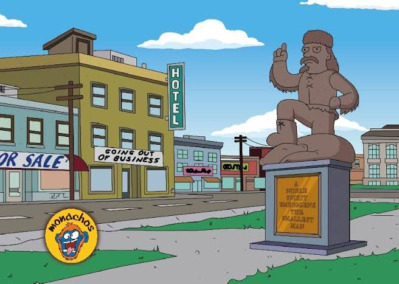
Rivalidad Con Shelbyville
Su ciudad rival, Shelbyville, fue fundada por su compañero de viaje y luego enemigo, Shelbyville Manhattan. La rivalidad entre ambas se remonta a cuando ambas ciudades fueron fundadas y se originó por las diferencias en el modo de vida que querían llevar cada uno de ellos. Shellbyville Manhattan quería llevar una vida de diversión y quería que los hombres pudieran casarse con sus primas, mientras que Jeremias Springfield quería mantener una vida casta y un gobierno justo.
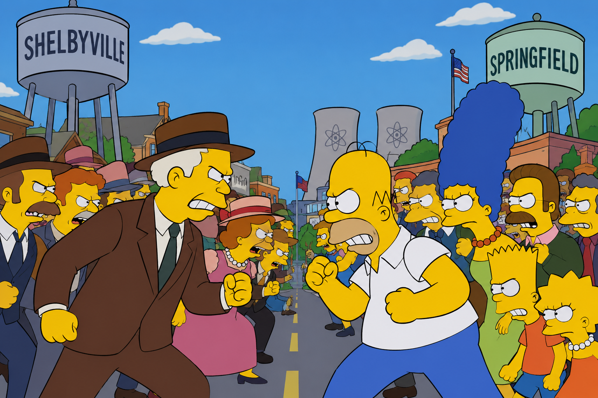
Caracteristicas Unicas
Springfield es una ciudad con una gran diversidad de características que la hacen única. Desde su arquitectura hasta su cultura, cada aspecto de la ciudad contribuye a su identidad y atractivo. Algunos ejemplos podrían ser:
-
Un propio equipo de baseball llamado los Isótopos de Springfield, que representa a la ciudad en competiciones deportivas. ¡No te pierdas sus emocionantes partidos y apoya a tu equipo local!
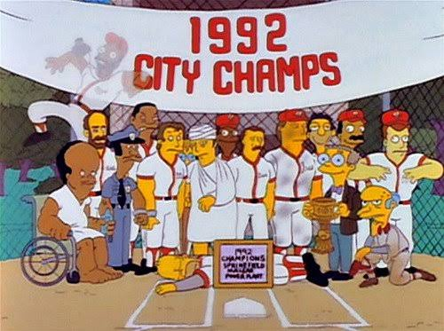
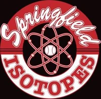
-
Una cotidiana y popular estación de televisión, el Canal 6 informa a los ciudadanos sobre las noticias locales. Su iconico presentador, Kent Brockman, es conocido por su estilo único y su capacidad para mantener a la audiencia siempre informada. ¡Sintoniza el Canal 6 para estar al tanto de todo lo que sucede en Springfield!
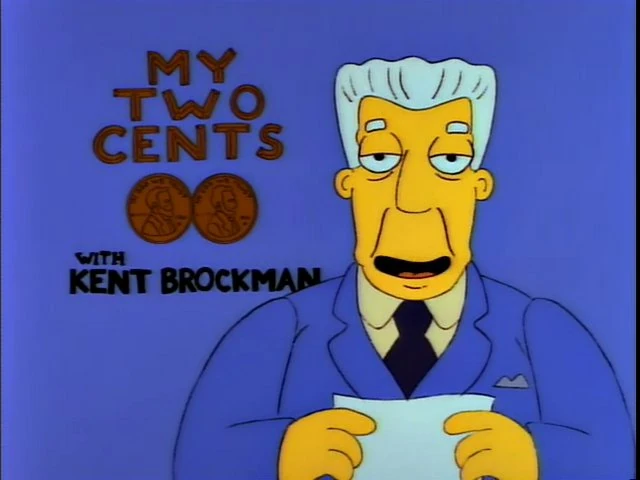
-
Un representativo, responsable y humilde alcalde llamado Joe Quimby, que lidera la ciudad y toma decisiones importantes para su desarrollo y bienestar. ¡Confia en el alcalde Quimby para mantener Springfield en el camino del progreso y la prosperidad! Sección monetizada por la campaña del alcalde Quimby.
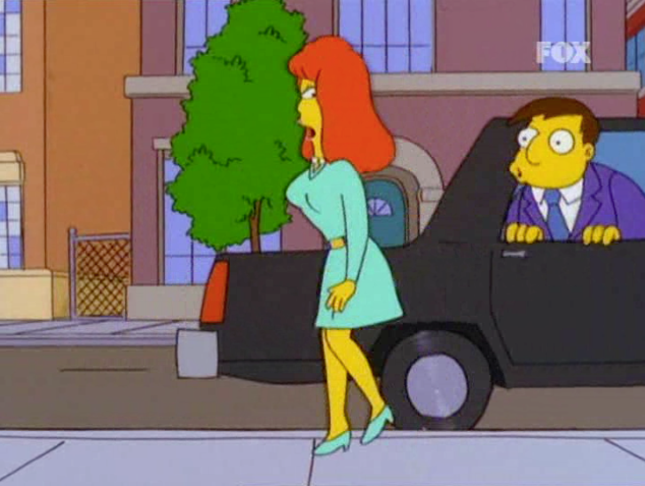
-
La escuela primaria de Springfield donde estudian los niños de la ciudad. Dirigida por el carismático y amable director Skinner, la escuela ofrece una educación de calidad y un ambiente totalmente seguro para el aprendizaje. ¡Una educación sólida es la base para un futuro brillante en Springfield!
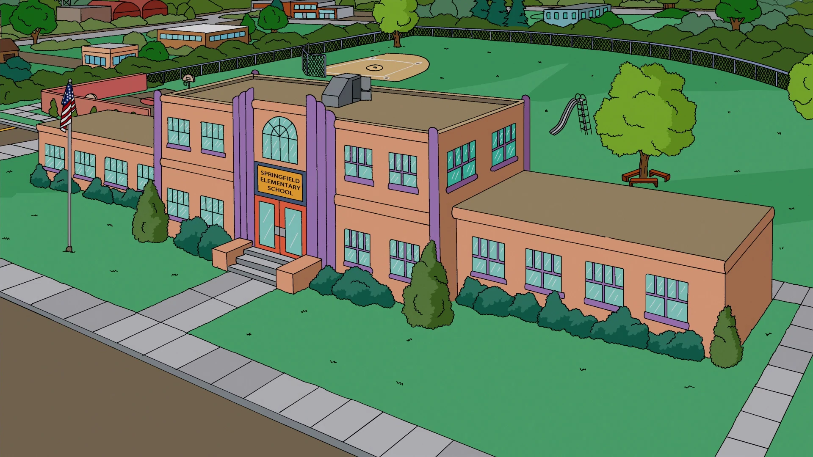
-
Una agricultura y ganaderia que solo se podría encontrar en Springfield, con productos frescos, amigables con los consumidores y de alta calidad. Con una ganaderia que se preocupa por el bienestar de los animales y la sostenibilidad del medio ambiente. ¡Disfruta de los productos elaborados con amor y dedicación en Springfield!
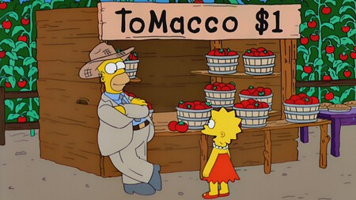
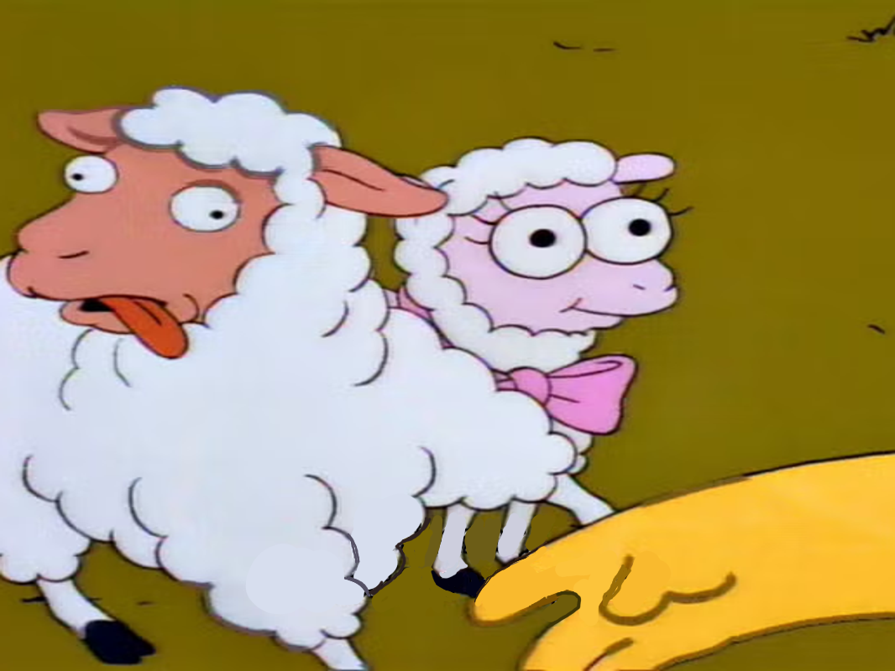
-
Si la agricultura y ganaderia son tan buenas, por supuesto que la gastronomia de Springfield es excelente. Con una gran variedad de restaurantes, bares y cafeterías que ofrecen productos deliciosos y auténticos. ¡Te advertimos que te tentetará con sus sabores y aromas irresistibles!
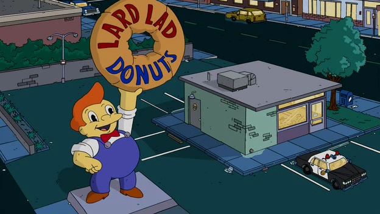
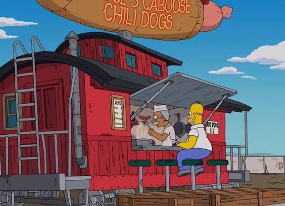
-
Una gran ciudad siempre necesita de seguridad y salud, por eso Springfield cuenta con un hospital y una comisaria que se encarga de ello. ¡Sientete seguro y protegido en Springfield, tu bienestar está asegurado!
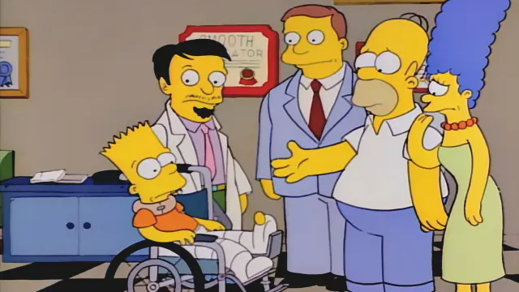
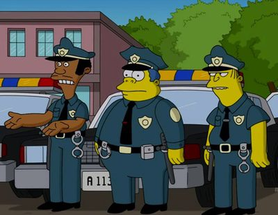
Barrios y Zonas
Al ser una ciudad gigante, Springfield cuenta con difenrentes barrios y zonas que la hacen única. Cada zona tiene su propia identidad y características, lo que contribuye a la diversidad y riqueza de la ciudad. Podemos dividirla de modo general en cuatro zonas, como:
-
El centro de la ciudad, donde se encuentran la mayoría de los negocios y edificios gubernamentales.
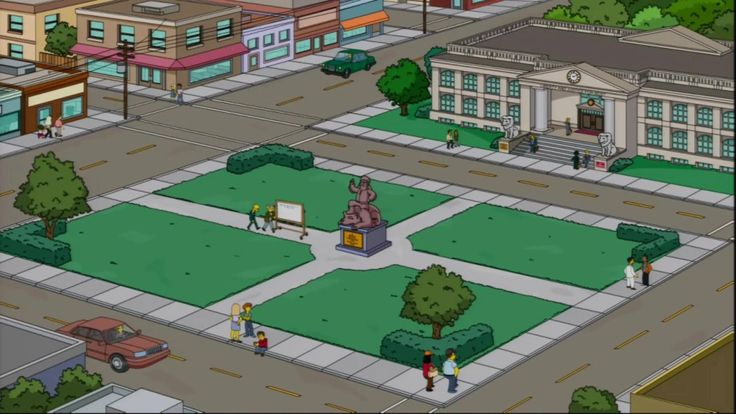
-
La zona residencial, donde viven la mayoría de los habitantes de Springfield.
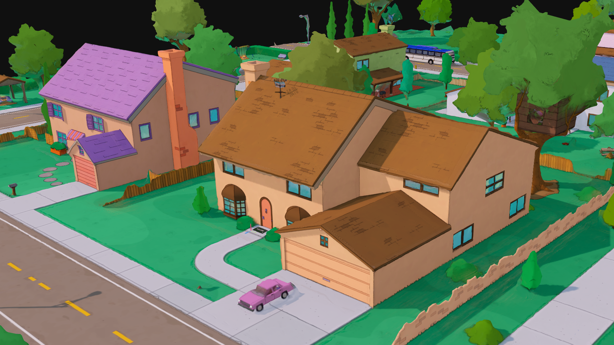
-
El barrio industrial, donde se encuentran las fábricas y plantas de producción.
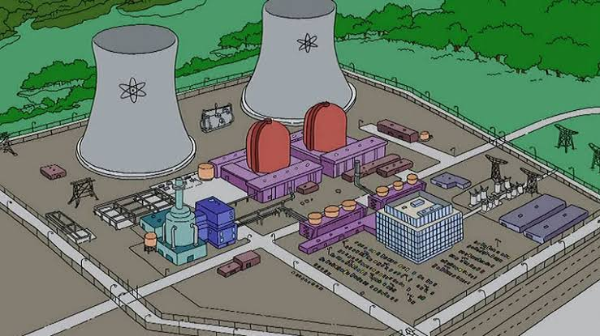
-
La zona rural, donde se encuentran los campos y granjas que abastecen a la ciudad.
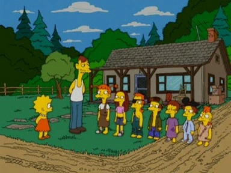
¿Quieres conocer más sobre alguno de los lugares mencionados? Te invitamos a visitar nuestra sección de Lugares y descubrir la esencia de los sitios más emblemáticos de Springfield.
MAPA DE SPRINGFIELD
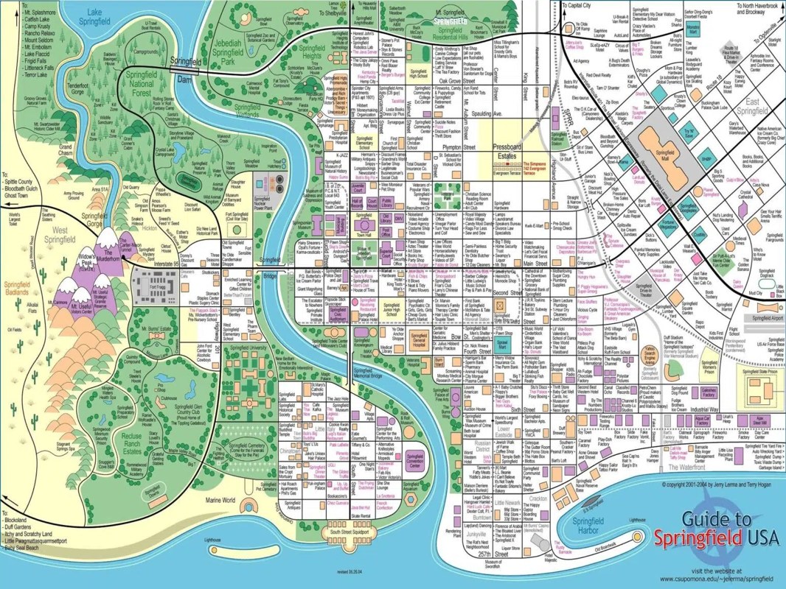